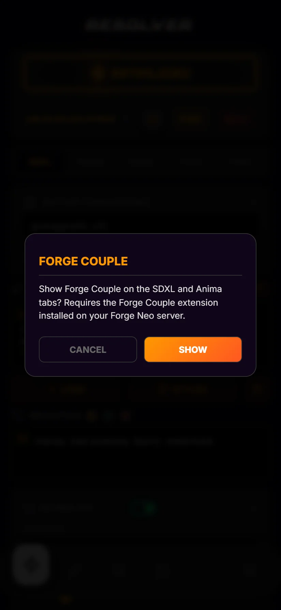
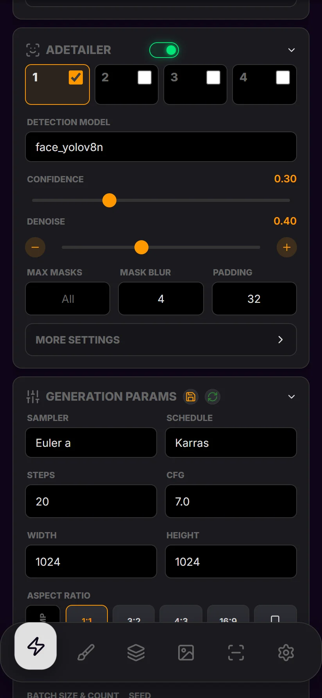
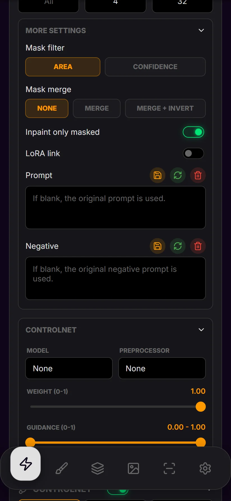
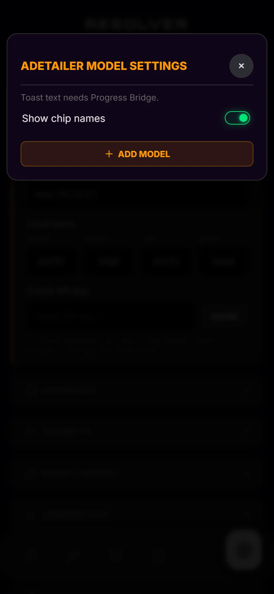
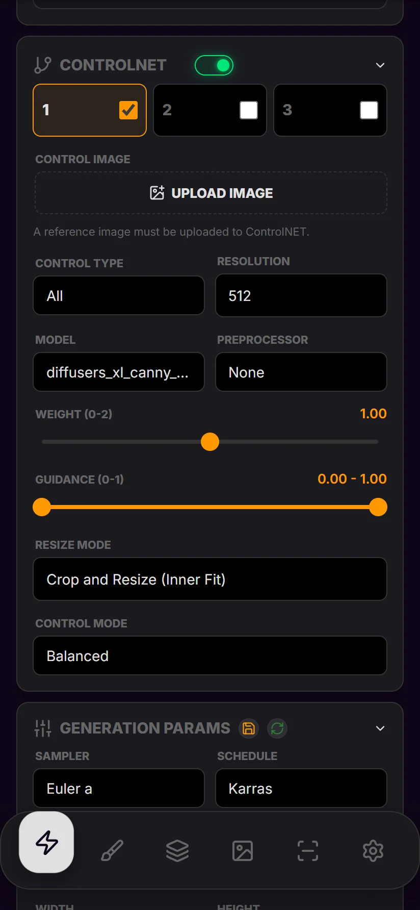
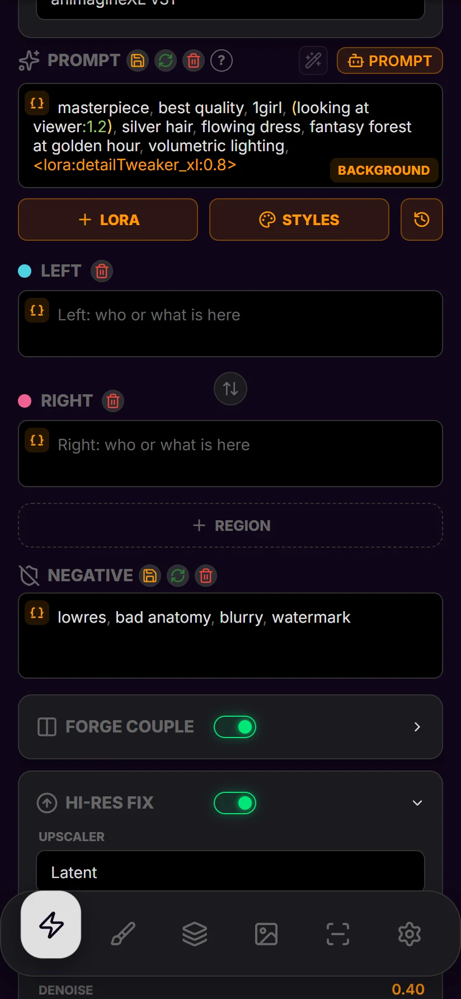
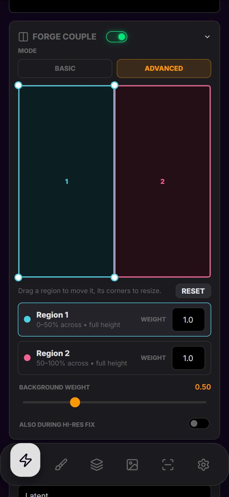

Docs / Create
Extensions
Forge can be extended with add-ons that fix faces, follow a pose, or describe parts of the picture separately. Resolver has controls for the popular ones; switch them on once they’re installed in Forge.
Which ones, and where to switch them on
| Extension | What it’s for | Needs in Forge | Switch on in Config → Extensions |
|---|---|---|---|
| ADetailer | Finds faces, hands or people and redraws them in detail | ADetailer | Show ADetailer [SDXL/Anima] · [other] |
| ControlNet | Follows a pose, outline or depth from a reference image | ControlNet (built into Forge) | Show ControlNet [SDXL/Anima] · [other] is in Experimental |
| Forge Couple | Different prompts for different parts of the picture | sd-forge-couple | Show Forge Couple |
| Tag autocomplete | Suggests tags as you type | TagComplete Neo | Tag autocomplete |
| Progress Bridge | Real progress for ADetailer and upscaling | forge-neo-progress-bridge | Progress Bridge |
The switches come in pairs: one for the SDXL and Anima tabs, and one for Qwen, Flux and Krea. Turn on only what your models support. Some switches ask first, reminding you the extension must be installed on your Forge.

ADetailer
Small faces and hands often come out blurry or wrong. ADetailer looks for them after the picture is made and redraws just those areas at a higher detail, like an automatic touch-up. It runs as part of the same job.
Turn it on with the switch in its header. It has up to 4 passes (8 with Show extra ADetailer passes), each with a tick box: for example pass 1 for faces and pass 2 for hands.
- Detection Model
- What to look for. See the table below.
- Confidence0.30
- How sure it must be that it found one. Lower finds more (and more mistakes).
- Denoise0.40
- How much the area may change. The − / + buttons nudge it by 0.01.
- Max MasksAll
- Fix at most this many (e.g. only the biggest face).
- Mask Blur · Padding4 · 32
- Softens the edge of the fixed area, and how much surrounding picture it sees.

| Detection model | Finds |
|---|---|
face_yolov8n · face_yolov8s | Faces (n is faster, s more accurate). The usual choice. |
hand_yolov8n · hand_yolov8s | Hands. |
person_yolov8n-seg · person_yolov8s-seg | Whole people, following their outline. |
mediapipe_face_full · _short · _mesh | Faces by another method (close-ups, or the face’s exact shape with mesh). |
The list comes from your Forge when connected, so models you’ve added there appear too.
A pass’s More Settings
- Mask filter
- With Max Masks set, which ones to keep: the biggest (AREA) or the surest (CONFIDENCE).
- Mask merge
- NONE: fix each separately. MERGE: all at once as one area. MERGE + INVERT: everything except them.
- Inpaint only masked
- Redraws just the area, at full detail (on by default).
- LoRA link
- Adds the main prompt’s LoRA tags to this pass, for LoRAs with Link to ADetailer on. Keeps a character LoRA’s face when it’s redrawn.
- Prompt · Negative
- What this pass draws, e.g.
detailed eyes, smile. If blank, the main prompt is used. Each has save-as-default, reload-default and clear buttons.
- ControlNet ControlNet [ADetailer]
- Guides the redraw with ControlNet: Model, Preprocessor, Weight (0–1) and Guidance range.

ADetailer Model Settings
In Config → Extensions → ADetailer model settings → MANAGE:
- Chip names: a short name for each detection model, shown on its pass chip (“Face”, “Hands”) instead of the file name. Show chip names turns them on.
- Toast text: what the progress message says during that pass. Needs Progress Bridge.
- ADD MODEL adds a model to the list.
The progress notification also tells you what ADetailer is doing, e.g. SDXL: 50/62 [1 face].

ControlNet
ControlNet makes the picture follow something from a reference image: a pose, the outlines, the depth. Upload a photo of someone waving and get a knight waving the same way.
There are 3 units you can combine (e.g. pose + depth). Units 2 and 3 use unit 1’s image if you leave theirs empty.
- Control Image
- UPLOAD IMAGE picks the reference. The ✕ removes it.
- Control Type
- Canny (outlines), Depth, OpenPose (pose)… Narrows the Model and Preprocessor lists to ones that fit.
- Preprocessor
- Turns your image into the guide: e.g.
openpose_fullfinds the skeleton,cannythe edges.noneif your image already is a guide.
- Model
- The ControlNet model matching the type and your checkpoint family.
- Resolution
- The size the preprocessor works at (512 by default; 64–2048).
- Weight0–2
- How strongly to follow the guide.
- Guidance Start · End
- Which part of the steps it applies to (0 to 1 = all). Ending early leaves the model freer for details.
- Resize Mode
- When the image isn’t the picture’s shape: Just Resize (stretch), Crop and Resize (inner fit), or Resize and Fill (outer fit).
- Control Mode
- Balanced, My prompt is more important, or ControlNet is more important.
- Low · High Threshold
- For Canny: which edges count (lower finds more lines).

Forge Couple
One prompt describes the whole picture, so with two characters their details mix (both get red hair). Forge Couple splits the picture into regions, each with its own prompt. On the SDXL and Anima tabs.
With Forge Couple on, the main prompt box becomes the background (it shows a BACKGROUND tag): the scene and anything shared. Region boxes appear under it, one per region: who or what is there.
Try a layout
BASIC
- Direction: SIDE BY SIDE (columns, Left / Right) or STACKED (rows, Top / Bottom). Each region gets an equal share.
- Region boxes under the prompt: write each region’s prompt. + REGION adds another, the bin clears one, and the arrows between two boxes swap them.
- Background Weight (0.1–1.5, 0.5): how much the background prompt counts against the regions.
- Also during Hi-Res Fix: keeps the regions in the second pass.

ADVANCED
Draw the regions yourself, any size, overlapping or not.
- Drag a region to move it, its corners to resize it. RESET goes back to the even split.
- Each region shows where it is (“0–50% across • full height”) and has its own Weight.
- Tap a region in the list to select it on the canvas.
A style can hold a whole Forge Couple layout: mode, direction, background and every region. See Styles. Prompt history keeps regions too.

Tag autocomplete
With the TagComplete Neo extension on your Forge, Resolver suggests tags as you type in a prompt box (Danbooru-style tags, your LoRAs and embeddings). Turn it on with Config → Extensions → Tag autocomplete; Tag file and Extra file choose which tag lists to use (“Same as server” follows the extension’s own setting). Off by default.
Progress Bridge
Normally Forge reports progress for the main steps only, so ADetailer and upscaling look stuck at the end. The forge-neo-progress-bridge extension reports them too, and with Config → Extensions → Progress Bridge on, Resolver shows that real progress (and your ADetailer toast texts).